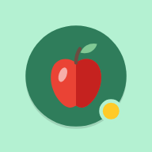

Mindre app,
mer liv
Varför de här apparna finns, vad de medvetet låter bli och grunderna som alla fyra delar.
De flesta appar vill för mycket
Konto först. Notiser, reklam, nyheter, uppsälj. Din data på någon annans server. Funktioner du aldrig bad om.
Kaloriappen
Tusentals märkesdubbletter och en premiumvägg – när du bara ville lära dig vad maten innehåller.
Budgetappen
Vill koppla till banken och sortera varje kaffe – när du bara ville veta om månaden går ihop.
Fotbollsappen
Nyheter, spel och notiser – när du bara ville se tabellen och hur det gick för ditt lag.
Stressappen
Prenumeration, ljudbibliotek och påminnelser om att andas – när du bara ville förstå vad som stressar dig och vad som hjälper.
Mina appar är motpolen: en fråga, ett bra svar, inget mer.
Fyra appar – samma känsla


Idag · Vecka · Trend


Månad · Översikt · Statistik


Matcher · Tabell · Lag


Trådar · Överblick · Arkiv
Bläddra mellan apparna med ‹ › längst ner. Påhittad exempeldata.
Fem principer
- En fråga per app. Allt som inte hjälper till att svara på den väljs bort.
- Din data är din. Den stannar i telefonen. Inget konto, ingen server, ingen spårning.
- Snabbt i vardagen. Det vanligaste tar några sekunder – resten kan fyllas i senare.
- Enkelt att lita på. Liten kod utan beroenden, som går att läsa och testa.
- Bättre tillsammans. Det som blir bättre i en app förs in i alla.
Varje app svarar på en sak
Vad har jag ätit i dag – och hur går vikten över tid?
Går månaden ihop – och var blir det tight framåt?
Hur ser tabellen ut, vad spelas härnäst och hur gick det för mitt lag?
Vad snurrar i huvudet – och vad är nästa steg, så att jag kan släppa det?
Lika viktigt som det som byggs
Varje app har en lista över icke-mål i sin spec – saker som medvetet inte byggs, hur lockande de än är.
| App | Medvetet bortvalt |
|---|---|
| Simple nutrition | Varumärken, färdigrätter, mikronäringsämnen |
| Budget buddy | Bankkoppling, kvitton för varje köp, skatteberäkning |
| Football, not soccer | Nyheter, trupper, statistik, pushnotiser |
| Stress kontroll | Synk, bilagor, påminnelser via server |
| Alla | Konto, server, reklam, spårning |
Inget lämnar telefonen
Bara i telefonen
Allt sparas i webbläsarens lagring på din enhet. Det finns ingen server att läcka från.
Webbläsaren vaktar
Sidans säkerhetsregler förbjuder anrop ut. Även om koden ville, skulle webbläsaren stoppa den.
Undantag granskas
Fotbollsappen måste hämta resultat – men bara från en enda källa, aldrig med din data, och bara när du tittar.
När känslig data läcker
Verkliga intrång hos stora tjänster som sparar samma sorts data som de här apparna. Vilka bolagen var spelar mindre roll – det är datan som gör ont.
Kaloriapp · 2018
En av världens största kaloriappar tappade 150 miljoner konton: e-post, användarnamn och lösenord – nyckeln till dagboken med vikt och mat.
Terapijournaler · 2020
En psykoterapiklinik hackades. Anteckningar om oro och mående från tiotusentals samtal läckte, och patienterna utpressades en och en.
Hela ekonomin · 2017
Hos en kreditupplysningsfirma kom angripare åt personnummer, adresser och kreditdata för nära 150 miljoner människor.
Barnens uppgifter · 2024
En skolplattform hackades. Namn, adresser och i vissa fall hälsouppgifter för tiotals miljoner elever kom ut.
Gemensamt: datan låg samlad på en server. I de här apparna finns ingen sådan server.
Det som säljs – utan intrång
Läckor är olyckor. Det här är inte det – det är så många appar tjänar pengar. Alla fall ledde till böter eller förlikning hos amerikanska myndigheter.
Mens och graviditet
En mensapp delade användarnas uppgifter om mens och graviditet med annons- och analysföretag – trots löfte om motsatsen.
Psykisk hälsa
En terapitjänst på nätet skickade svar om användarnas mående till sociala medier, för riktad reklam.
Mediciner
En recepttjänst delade vilka läkemedel och diagnoser användarna hade med stora annonsplattformar.
Varje köp
Bankkopplade budgettjänster kan sälja transaktioner – var du handlar och vad du tjänar – avidentifierade, till investerare och analysföretag.
Är du bekväm med att din vikt, din oro eller din lön blir en vara? De här apparna har inget att sälja: inget konto, ingen server, ingen analys.
Ingen server – inget att stjäla
Känslig data läcker oftast på två sätt: ett företags databas hackas, eller företaget säljer och delar den. En budgetapp vet allt om din ekonomi, en hälsoapp din vikt, en familjeapp dina barns namn.
Ingen databas att hacka
Vanliga appar samlar miljontals användare på ett ställe – ett drömmål för hackare. Här finns datan bara i din telefon.
Inget att sälja
Inget konto, ingen analys, ingen reklam. Webbläsaren spärrar anrop ut, så datan kan inte skickas iväg – ens av misstag.
Låst även i molnet
Backupen krypteras med AES-256 och ditt lösenord innan den lämnar telefonen. Molntjänsten ser bara obegriplig data.
Ärligt: inget är 100 % säkert – lås telefonen, håll den uppdaterad och välj ett starkt lösenord. Men utan server finns inget centralt att stjäla.
Ett lösenord från start – sedan ett tryck
Ingen inloggning, bara nyckeln till dina backup-filer. Ingen server kan rädda datan, så backupen är din livlina.
Därför från start
Valt från början blir backup ett enda tryck – telefonen kommer ihåg lösenordet. Har du redan en backup läser du in den i stället.
Låt appen välja
16 slumpade tecken tar längre tid att gissa än universum funnits, även med 1 000 grafikkort. Sommar2024! faller på en dag.
Ny telefon
Spara backup-fil med ett tryck, med påminnelse varje månad. På nya telefonen: läs in filen, skriv lösenordet och tryck Ersätt.
Spara lösenordet
Det finns aldrig i filen. Utan det öppnas backupen inte – inte ens av utvecklaren. Lägg det i din lösenordshanterare.
Krypteringen skyddar filen när den lämnar telefonen. I telefonen skyddar skärmlåset.
Några sekunder, sedan klart
Det vanligaste först
Ny tråd: välj typ, skriv en rubrik. Tabellen syns direkt vid start. Resten kan vänta.
Byggd för tummen
Meny nertill, tryckytor på minst 48 px, inga små kryss.
Bakåt fungerar
Telefonens bakåtknapp stänger det som är öppet, ett steg i taget – inte hela appen.
Fungerar utan nät
Installeras från webben och startar som en vanlig app, även i flygläge.
En app ska ta bort stress, inte skapa den
Inga notiser som kräver uppmärksamhet. Inga streaks att förlora. Inga röda siffror som ropar.
Skriv ner – släpp
Stress kontroll bygger på en enkel tanke: det som har ett nästa steg nedskrivet behöver inte snurra i huvudet.
Vanor före siffror
Simple nutrition låter dig lära dig råvarorna. Kalorier finns som stöd när du vill.
Månad, inte kvitto
Budget buddy planerar det stora. Kaffet behöver ingen rad.
Ren webb, inga beroenden
Inga ramverk
Vanlig HTML, CSS och JavaScript. Inget byggsteg, inga paket från okända källor.
Går att granska
Liten kod som en människa kan läsa. Hela appen ryms i en enda fil.
Text är alltid text
Det du skriver visas aldrig som kod. En rubrik kan inte bli ett skript.
Ett tryck – och allt kontrolleras
En mall, fyra appar
- Ny app startas från en gemensam mall – backup, tema, tester och hjälp finns från dag ett
- Spec först: idé, mål och det som medvetet inte byggs
- Säkerheten prövas före bygget och granskas före uppladdning
- Det som blir bättre i en app förs tillbaka till mallen – och ut i alla
Exempel: den låsta backupen byggdes i en app och finns nu i alla fyra.
Samma formspråk, egen färg
Material Design 3, byggd för mobilen
Varje app har en egen nyckelfärg som styr allt. Nästan kantigt och tätt, ljust och mörkt tema som följer telefonen.
Svenska och engelska i appen · systemtypsnitt · hjälp inbyggd
Prova en app
Öppna i Chrome eller Safari och välj Installera app / Lägg till på hemskärmen.
En fråga.
Din data.
Inget mer.
Små appar som gör en sak väl, håller dina uppgifter hos dig och är testade före varje version.
← Till startsidan